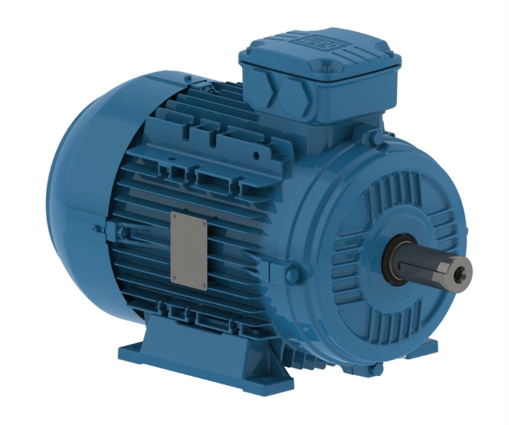
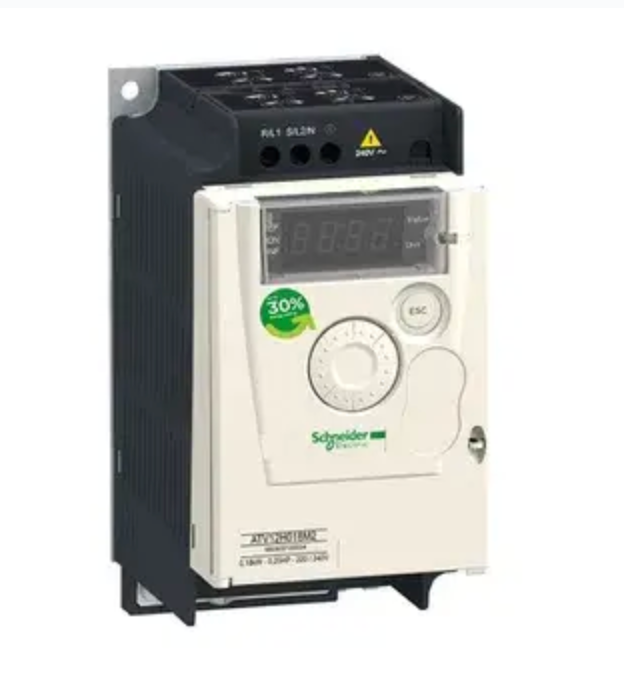
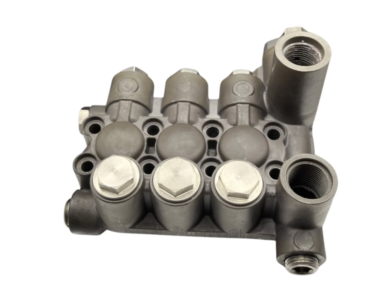
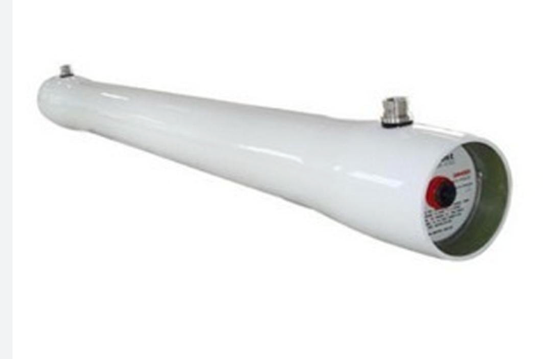
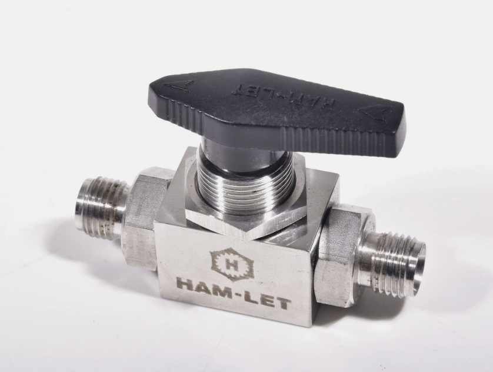
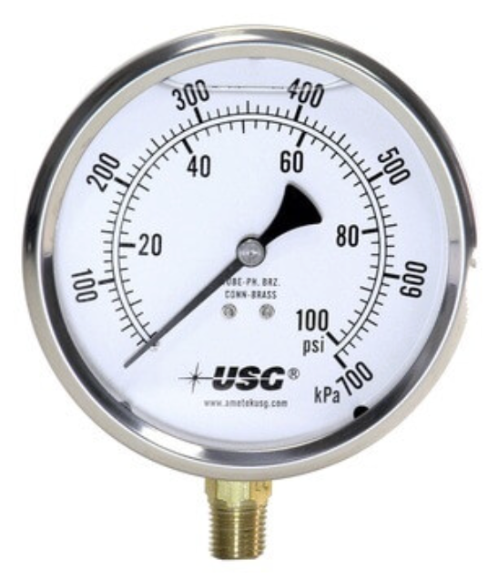
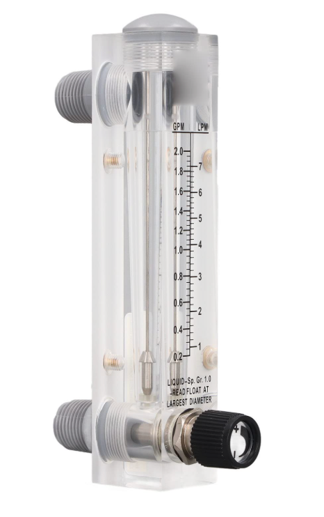
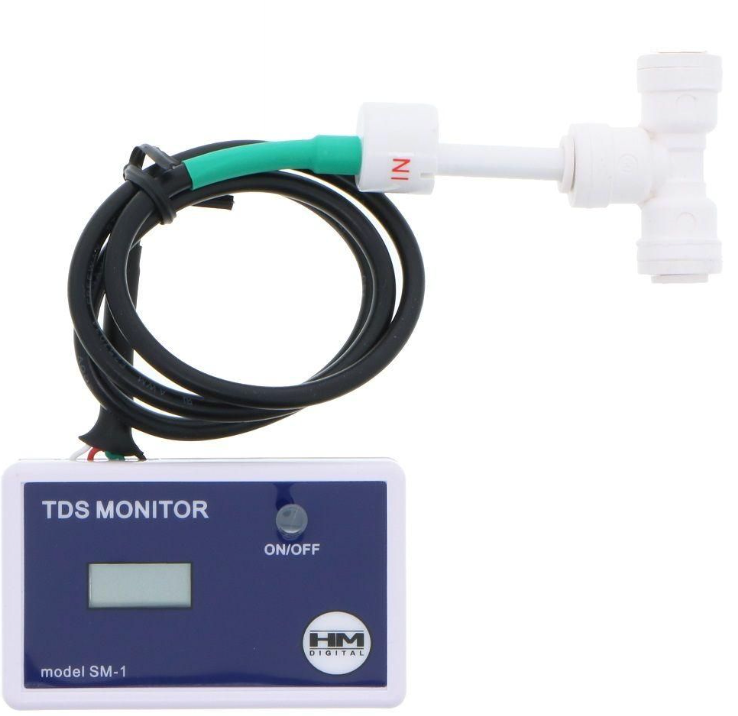
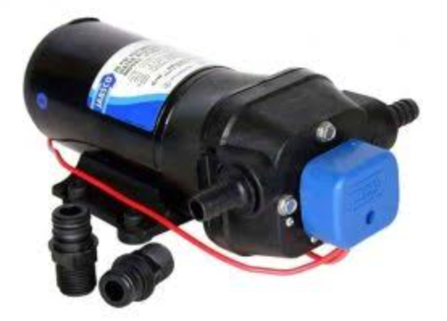
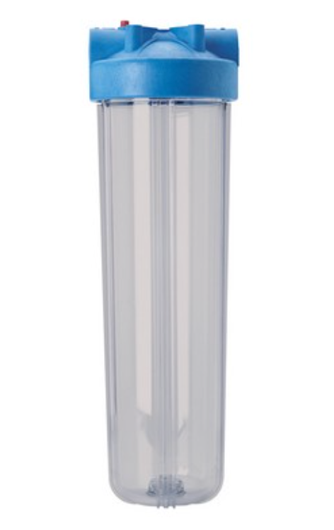

An affordable marine RO watermaker built by two sailors with 30,000 nautical miles across 4 continents and 2 oceans. Make your own fresh water — on anchor, at sea, wherever you are.
A 220V AC marine reverse osmosis watermaker assembled from generic industrial and semi-industrial components, targeting a significant cost reduction versus branded units while maintaining performance and reliability.
35 knots over the beam. Boats stern-to, ropes crossing everywhere, bumpers flying. Someone dragging. Someone shouting. And you're there — in the middle of all of it — because you need to fill water tanks.
And the water you get? Half the time it tastes of salt. Pipes that feed straight off a municipal cistern, in a port that's right on the sea. You fill up, pay for a berth, navigate the chaos — and you're still not sure what's actually going in your tanks.
Your own watermaker changes everything. Drop anchor in a bay. Make 60 litres in an hour. Move on. Stay out as long as you want.
Every component was chosen by someone who has anchored in the same bays you sail to. Low cost. Standard parts. Designed to run on the power you already have aboard.
Assembled in Athens from European-sourced components — no customs clearance, no waiting for a US shipment, no dollar invoice with the exchange rate baked in. Our price is in euros, our warranty is EU-valid, and when you call for support you reach the same two people who built your system. In the Mediterranean.
An Italian-made ceramic triplex plunger pump. Water-lubricated ceramic plungers — no oil to change, no crankcase to service, nothing to forget. The same pump family used in professional RO systems worldwide. Built to outlast the boat.
Dial the VFD down to 30–35Hz at anchor. The system draws ~700W — about 58A at 12V. Flexible panels at 400W nominal realistically yield 180–200W in working conditions: heat, flat mounting, and rigging shadow all cut into the headline figure. Even so, running midday with panels charging reduces your net battery draw to around 500W. One to two hours produces 35–70 litres — without the engine running.
An Italian pump. SS316L valve and fittings. A seawater RO membrane. An industrial variable frequency drive. Every component is a standard catalogue part — stocked by distributors in Athens, Palma, Marseille, and beyond. Nothing that requires a call to one specific overseas supplier.
Branded watermakers are built for the market that buys the most of them — and that is not you. Oroboro is designed for the Mediterranean, assembled in Europe, and supported by the people who built it.
Four real Mediterranean setups. Honest power math — fridge included, realistic solar output, no wishful thinking. Pick the one closest to yours.
Same pump, same motor, same build quality. Choose the membrane size that matches your water consumption and the space you have below.
Every component is a standard catalogue part from an established manufacturer. Nothing proprietary. Nothing that requires a specialist to source or replace.










We've done 30,000 miles across 4 continents and 2 oceans. We know what it's like to enter a Greek town quay in 30 knots of meltemi just to fill water tanks — the chaos, the shouting, the incidents. And the water you get? Half the time it tastes of salt. A good watermaker was always the answer, but the price was never justified. The pump comes from Italy, the membrane from a world-class manufacturer, the fittings from standard industrial suppliers — so we built one ourselves.
ουρόβοροςThe ouroboros is an ancient Greek symbol — a serpent eating its own tail, forming a perfect circle. It represents the eternal cycle: self-renewal, endless return, the thing that feeds itself forever.
We chose it because a watermaker is the closest thing to that eternal cycle that exists aboard a boat. The sea is infinite. Our system draws from it as long as you sail. The water you make eventually returns to the sea. The cycle closes, and begins again.
It is also the simplest expression of what independence at sea actually means: not needing the shore for something as fundamental as drinking water. The serpent feeds itself. So do you.
Prototype testing is underway. First units are expected summer 2027. Leave your email and we will send you one message when the Oroboro is ready to order — nothing else.
No spam. One email, when it's available.